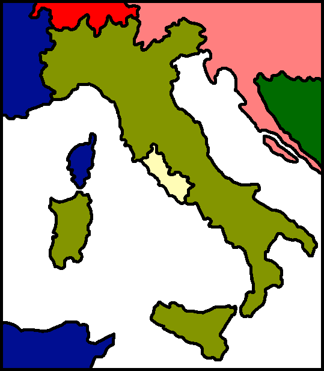
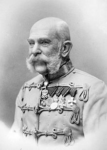

|
The Papal States, officially known as the State of the Church, were several territories on the Italian Peninsula ruled directly under the pope.

|
The Papal States, officially known as the State of the Church, were several territories on the Italian Peninsula ruled directly under the pope.
 |
The Kingdom of Italy was a state which existed from 1861 until 1946. The state was founded as a result of the unification of Italy under the influence of the Kingdom of Sardinia, which can be considered its legal predecessor state.
Switzerland, officially the Swiss Confederation, is a federal republic in Europe. It consists of 26 cantons, and the city of Bern is the seat of the federal authorities. The country is situated in Western-Central Europe, and is bordered by Italy to the south, France to the west, Germany to the north, and Austria and Liechtenstein to the east. Switzerland has existed since the 13th Century.
|  |
Austria-Hungary, often referred to as the Austro-Hungarian Empire or the Dual Monarchy, was a constitutional union of the Austrian Empire and the Kingdom of Hungary that existed from 1867 to 1918, when it collapsed as a result of defeat in World War I.
 |
The French Second Empire was the Imperial Bonapartist regime of Napoleon III from 1852 to 1870, between the Second Republic and the Third Republic, in France.
The Ottoman Empire was an empire founded at the end of the 13th century in northwestern Anatolia in the town of Söğüt by the Oghuz Turkish tribal leader Osman. After 1354, the Ottomans crossed into Europe, and with the conquest of the Balkans, the Ottoman Beylik was transformed into a transcontinental empire. The Ottomans ended the Byzantine Empire with the 1453 conquest of Constantinople by Mehmed the Conqueror. This nation is unimportant to the unification of Italy.